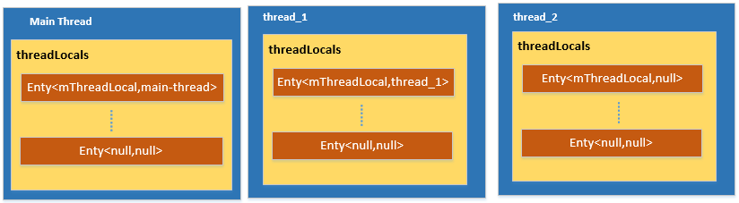

原文连接:https://www.cnblogs.com/andy-songwei/p/12040372.html
如果转载请声明，转自【https://www.cnblogs.com/andy-songwei/p/12040372.html】，谢谢！
本文的主要内容为：
1、一个生活中的场景
鉴于普罗大众都喜欢看热闹，咱们先来看个热闹再开工吧！
场景一：
中午了， 张三、李四和王五一起去食堂大菜吃饭。食堂刚经营不久，还很简陋，负责打菜的只有一位老阿姨。
张三：我要一份鸡腿。
李四：我要一份小鸡炖蘑菇。
张三：我再要一份红烧肉。
王五：我要一份红烧排骨。
李四：我不要小鸡炖蘑菇了，换成红烧鲫鱼。
王五：我再要一份椒盐虾。
张三：我再要一份梅菜扣肉。
......
张三：我点的红烧肉，为啥给我打红烧鲫鱼？
李四：我的红烧鲫鱼呢？
王五：我有点红烧肉吗？
......
李四：我点了15元的菜，为啥扣我20？
王五：我点了20元的菜，只扣了我15元，赚了，窃喜！
张三：我已经刷了卡了，怎么还叫我刷卡？
......
老阿姨毕竟上了年纪，不那么利索，这几个小伙子咋咋呼呼，快言快语，老阿姨也被搅晕了，手忙脚乱，忙中出错，这仨小伙也是怨声载道。
场景二：
食堂领导看到这个场景，赶紧要求大家排队，一个一个来。后来，老阿姨轻松多了，也没有再犯错了。
但是，新的问题又来了，打菜的人当中，很多妹子很磨叽，点个菜犹犹豫豫想半天。
张三：太慢了，我快饿死了！
李四：再这么慢，下次去别家！
王五：我等得花儿都谢啦！
赵六：啥？我点了啥菜，花了多少钱，其它人怎么都知道？是阿姨多嘴了，还是其它人偷偷关注我很久了？太不安全了，一点隐私都没有，以后不来了。
......
场景三：
领导听到这些怨言，心里很不是滋味，大手一挥：扩大经营，以后为你们每一个人开一个流动窗口并请一位私人阿姨，只为你一个人服务！
从此，再也没有怨言，阿姨也没有再犯错了，皆大欢喜......场景一就像多个线程同时去操作一个数据，最终的结果就是混乱。于是出现了同步锁synchronized，同一时刻只运行一个线程操作，就像场景二，大家先来后到排队，混乱的问题解决了。但是此时一个线程在操作的时候，其它线程只能闲等着，而且这些数据是共享的，每个线程希望拥有只能自己操作的私人数据，ThreadLocal就正好满足了这个需求。
所以，相比于synchronized，Threadlocal通过牺牲空间来换取时间和效率。
2、ThreadLocal简介
ThreadLocal官方的介绍为：
1 /**
2 * This class provides thread-local variables. These variables differ from
3 * their normal counterparts in that each thread that accesses one (via its
4 * {@code get} or {@code set} method) has its own, independently initialized
5 * copy of the variable. {@code ThreadLocal} instances are typically private
6 * static fields in classes that wish to associate state with a thread (e.g.,
7 * a user ID or Transaction ID).
8 */大致意思是：ThreadLocal提供了线程本地变量。这些变量与一般变量相比，其不同之处在于，通过它的get()和set()方法，每个线程可以访问自己独立拥有的初始变量副本。翻译成人话就是，ThreadLocal为每一个线程开辟了一个独立的存储器，只有对应的线程才能够访问其数据，其它线程则无法访问。对应于前文的场景，就像食堂为每一个人安排了一个窗口和专属阿姨为其打菜，这个过程中，这个窗口和阿姨就是其专属的独立的资源，其他人就无从知道他点了什么菜，花了多少钱。
3、ThreadLocal的简单使用示例
是骡子是马，先拉出来溜溜！先直观看看它的能耐，再来了解它丰富的内心：
1 // =========实例3.1========
2 private ThreadLocal<String> mThreadLocal = new ThreadLocal<>();
3 private void testThreadLocal() throws InterruptedException {
4 mThreadLocal.set("main-thread");
5 Log.i("threadlocaldemo", "result-1=" + mThreadLocal.get());
6 Thread thread_1 = new Thread() {
7 @Override
8 public void run() {
9 super.run();
10 mThreadLocal.set("thread_1");
11 Log.i("threadlocaldemo", "result-2=" + mThreadLocal.get());
12 }
13 };
14 thread_1.start();
15 //该句表示thread_1执行完后才会继续执行
16 thread_1.join();
17 Thread thread_2 = new Thread() {
18 @Override
19 public void run() {
20 super.run();
21 Log.i("threadlocaldemo", "result-3=" + mThreadLocal.get());
22 }
23 };
24 thread_2.start();
25 //该句表示thread_2执行完后才会继续执行
26 thread_2.join();
27 Log.i("threadlocaldemo", "result-4=" + mThreadLocal.get());
28 }在主线程中调用这个方法，运行结果：
1 12-13 13:42:50.117 25626-25626/com.example.demos I/threadlocaldemo: result-1=main-thread
2 12-13 13:42:50.119 25626-25689/com.example.demos I/threadlocaldemo: result-2=thread_1
3 12-13 13:42:50.119 25626-25690/com.example.demos I/threadlocaldemo: result-3=null
4 12-13 13:42:50.120 25626-25626/com.example.demos I/threadlocaldemo: result-4=main-thread看到这个结果会不会惊掉下巴呢？明明在第9行中set了值，第10行中也得到了对应的值，但第20行的get得到的却是null，第26行得到的是第3行set的值。这就是ThreadLocal的神奇功效，主线程set的值，只能在主线程get到；thread_1内部set的值，thread_1中才能get；thread_2中没有set，所以get到的就是null。
而实现这，不要999，也不要99，只要3......三步即可：
1 ThreadLocal<T> mThreadLocal = new ThreadLocal<>();
2 mThreadLocal.set(T);
3 mThreadLocal.get();就是这么方便，就是这么简洁！
4、提供的4个主要接口
ThreadLocal以其使用简单，风格简洁让人一见倾心。它对外提供的接口很少，当前SDK中，主要有4个：
1 public void set(T value) { }
2 public T get() { }
3 public void remove() { }
4 protected T initialValue() { } 为了保持对这些方法说明的原滋原味，我们直接通过源码中对其的注释说明来认识它们。
（1）set()
1 /**
2 * Sets the current thread's copy of this thread-local variable
3 * to the specified value. Most subclasses will have no need to
4 * override this method, relying solely on the {@link #initialValue}
5 * method to set the values of thread-locals.
6 *
7 * @param value the value to be stored in the current thread's copy of
8 * this thread-local.
9 */
10 public void set(T value)设置当前线程的ThreadLocal值为指定的value。大部分子类没有必要重写该方法，可以依赖initialValue()方法来设置ThreadLocal的值。
（2）get()
1 /**
2 * Returns the value in the current thread's copy of this
3 * thread-local variable. If the variable has no value for the
4 * current thread, it is first initialized to the value returned
5 * by an invocation of the {@link #initialValue} method.
6 *
7 * @return the current thread's value of this thread-local
8 */
9 public T get()用于获取当前线程所对应的ThreadLocal值。如果当前线程下，该变量没有值，会通过调用initialValue()方法返回的值对其进行初始化。
（3）remove()
1 /**
2 * Removes the current thread's value for this thread-local
3 * variable. If this thread-local variable is subsequently
4 * {@linkplain #get read} by the current thread, its value will be
5 * reinitialized by invoking its {@link #initialValue} method,
6 * unless its value is {@linkplain #set set} by the current thread
7 * in the interim. This may result in multiple invocations of the
8 * {@code initialValue} method in the current thread.
9 *
10 * @since 1.5
11 */
12 public void remove()该接口是从JDK1.5开始提供的，用于删除当前线程对应的ThreadLocal值，从而减少内存占用。在同一线程中，如果该方法被调用了，随后再调用get()方法时，会使得initialValue()被调用，从而ThreadLocal的值被重新初始化，除非此时在调用get()前调用了set()来赋值。该方法可能导致initialValue()被多次调用。该方法可以不用显示调用，因为当线程结束后，系统会自动回收线程局部变量值。所以该方法不是必须调用的，只不过显示调用可以加快内存回收。
（4）initialValue()
1 /**
2 * Returns the current thread's "initial value" for this
3 * thread-local variable. This method will be invoked the first
4 * time a thread accesses the variable with the {@link #get}
5 * method, unless the thread previously invoked the {@link #set}
6 * method, in which case the {@code initialValue} method will not
7 * be invoked for the thread. Normally, this method is invoked at
8 * most once per thread, but it may be invoked again in case of
9 * subsequent invocations of {@link #remove} followed by {@link #get}.
10 *
11 * <p>This implementation simply returns {@code null}; if the
12 * programmer desires thread-local variables to have an initial
13 * value other than {@code null}, {@code ThreadLocal} must be
14 * subclassed, and this method overridden. Typically, an
15 * anonymous inner class will be used.
16 *
17 * @return the initial value for this thread-local
18 */
19 protected T initialValue() {
20 return null;
21 }返回当前线程对应的ThreadLocal的初始值。当当前线程是通过get()方法第一次对ThreadLocal进行访问时，该方法将会被调用，除非当前线程之前调用过set()方法，在这种情况下initialValue()方法将不会被当前线程所调用。一般而言，该方法最多只会被每个线程调用一次，除非随后在当前线程中调用remove()方法，然后调用get()方法。该实现会简单地返回null；如果程序员希望ThreadLocal拥有一个初始值，而不是null，ThreadLocal需要定义一个子类，并且在子类中重写initialValue()方法。比较典型的做法是使用一个匿名内部类。该方法由protected修饰，可见其这样设计通常是为了供用户重写，从而自定义初始值。后面会再通过实例来演示该方法的使用。
5、ThreadLocal工作机制
ThreadLocal使用起来非常简单，但它是如何实现为每一个Thread保存一份独立的数据的呢？我们先结合实例3.1来看set()方法都做了些什么：
1 //=========ThreadLocal=======源码5.1
2 public void set(T value) {
3 Thread t = Thread.currentThread();
4 ThreadLocalMap map = getMap(t);
5 if (map != null)
6 map.set(this, value);
7 else
8 createMap(t, value);
9 }首先就是获取当前的线程，然后根据当前线程来获取一个ThreadLocalMap，如果map不为null，就往map中插入指定值，注意这的key是ThreadLocal实例；如果map为null，就创建一个map。看看第4行getMap(t)做了啥：
1 //=========ThreadLocal=======源码5.2
2 /**
3 * Get the map associated with a ThreadLocal.
4 * ......
5 */
6 ThreadLocalMap getMap(Thread t) {
7 return t.threadLocals;
8 }
9
10 /**
11 * ThreadLocalMap is a customized hash map suitable only for
12 * maintaining thread local values......
13 */
14 static class ThreadLocalMap {
15 ......
16 }
17
18 //==========Thread========
19 ThreadLocal.ThreadLocalMap threadLocals = null;getMap()返回的是指定线程（也就是当前线程）的threadLocals变量，这个变量是ThreadLocal.ThreadLocalMap类型的，而ThreadLocalMap是一个仅适用于维护线程本地变量值的自定义的HashMap。简单来说，就是返回当前线程下的一个自定义HashMap。
下面我抽取了ThreadLocalMap的部分代码，先来总体上认识它（这里我们不需要读懂其中的每一行代码，知道它里面主要做了哪些事就可以了）：


1 //=========源码5.3========
2 static class ThreadLocalMap {
3
4 static class Entry extends WeakReference<ThreadLocal<?>> {
5 /** The value associated with this ThreadLocal. */
6 Object value;
7
8 Entry(ThreadLocal<?> k, Object v) {
9 super(k);
10 value = v;
11 }
12 }
13
14 /**
15 * The initial capacity -- MUST be a power of two.
16 */
17 private static final int INITIAL_CAPACITY = 16;
18
19 /**
20 * The table, resized as necessary.
21 * table.length MUST always be a power of two.
22 */
23 private Entry[] table;
24
25 /**
26 * The number of entries in the table.
27 */
28 private int size = 0;
29
30 /**
31 * The next size value at which to resize.
32 */
33 private int threshold; // Default to 0
34
35 /**
36 * Set the resize threshold to maintain at worst a 2/3 load factor.
37 */
38 private void setThreshold(int len) {
39 threshold = len * 2 / 3;
40 }
41
42 ThreadLocalMap(ThreadLocal<?> firstKey, Object firstValue) {
43 table = new Entry[INITIAL_CAPACITY];
44 int i = firstKey.threadLocalHashCode & (INITIAL_CAPACITY - 1);
45 table[i] = new Entry(firstKey, firstValue);
46 size = 1;
47 setThreshold(INITIAL_CAPACITY);
48 }
49
50 /**
51 * Get the entry associated with key.
52 * ......
53 */
54 private Entry getEntry(ThreadLocal<?> key) {
55 int i = key.threadLocalHashCode & (table.length - 1);
56 Entry e = table[i];
57 if (e != null && e.get() == key)
58 return e;
59 else
60 return getEntryAfterMiss(key, i, e);
61 }
62
63 /**
64 * Set the value associated with key.
65 * ......
66 */
67 private void set(ThreadLocal<?> key, Object value) {
68
69 // We don't use a fast path as with get() because it is at
70 // least as common to use set() to create new entries as
71 // it is to replace existing ones, in which case, a fast
72 // path would fail more often than not.
73
74 Entry[] tab = table;
75 int len = tab.length;
76 int i = key.threadLocalHashCode & (len-1);
77
78 for (Entry e = tab[i];
79 e != null;
80 e = tab[i = nextIndex(i, len)]) {
81 ThreadLocal<?> k = e.get();
82
83 if (k == key) {
84 e.value = value;
85 return;
86 }
87
88 if (k == null) {
89 replaceStaleEntry(key, value, i);
90 return;
91 }
92 }
93
94 tab[i] = new Entry(key, value);
95 int sz = ++size;
96 if (!cleanSomeSlots(i, sz) && sz >= threshold)
97 rehash();
98 }
99
100 /**
101 * Remove the entry for key.
102 */
103 private void remove(ThreadLocal<?> key) {
104 Entry[] tab = table;
105 int len = tab.length;
106 int i = key.threadLocalHashCode & (len-1);
107 for (Entry e = tab[i];
108 e != null;
109 e = tab[i = nextIndex(i, len)]) {
110 if (e.get() == key) {
111 e.clear();
112 expungeStaleEntry(i);
113 return;
114 }
115 }
116 }
117
118 /**
119 * Double the capacity of the table.
120 */
121 private void resize() {
122 ......
123 }
124 }这里面维护了一个Entry[] table数组，初始容量为16，当数据超过当前容量的2/3时，就开始扩容，容量增大一倍。每一个Entry的K为ThreadLocal对象，V为要存储的值。每一个Entry在数组中的位置，是根据其K（即ThreadLocal对象）的hashCode & (len - 1)来确定，如第44行所示，这里K的hashCode是系统给出的一个算法计算得到的。如果碰到K的hashCode值相同，即hash碰撞的场景，会采用尾插法形成链表。当对这个map进行set，get，remove操作的时候，也是通过K的hashCode来确定该Entry在table中的位置的，采用hashCode来查找数据，效率比较高。这也是HashMap底层实现的基本原理，如果研究过HashMap源码，这段代码就应该比较容易理解了。
继续看源码5.1，第一次调用的时候，显然map应该是null，就要执行第8行createMap了，
1 //==========ThreadLocal=========源码5.4
2 void createMap(Thread t, T firstValue) {
3 t.threadLocals = new ThreadLocalMap(this, firstValue);
4 }结合ThreadLocalMap源码第41行的构造方法，就清楚了这个方法创建了一个ThreadLocalMap对象，并存储了一个Entry<当前的ThreadLocal对象，value>。此时，在当前的线程下拥有了一个ThreadLocalMap，这个ThreadLocalMap中维护了一个容量为16的table，table中存储了一个以当前的ThreadLocal对象为K，value值为V的Entry。Thread、ThreadLocalMap、ThreadLocal、Entry之间的关系可以表示为下图：
图5.1
而如果当前Thread的map已经存在了，源码5.1就会执行第6行了，进而执行ThreadLocalMap中的set方法。结合前面对ThreadLocalMap的介绍，想必这个set方法也容易理解了，大致过程是：
1）根据Thread找到map；
2）通过传入的this(即ThreadLocal对象)，得到hashCode；
3）根据hashCode & (len - 1)确定对应Entry在table中的位置；
4）如果该Entry存在，则替换Value，否则新建（ThreadLocalMap源码第78~92行表示在具有相同hashCode的Entry链表上找到对应的Entry，这和hash碰撞有关）。
在调用ThreadLocal的get方法时又做了什么呢？看看其源码：
1 //=========ThreadLocal======源码5.5
2 public T get() {
3 Thread t = Thread.currentThread();
4 ThreadLocalMap map = getMap(t);
5 if (map != null) {
6 ThreadLocalMap.Entry e = map.getEntry(this);
7 if (e != null) {
8 @SuppressWarnings("unchecked")
9 T result = (T)e.value;
10 return result;
11 }
12 }
13 return setInitialValue();
14 }现在，第12行及以前的代码应该很容易理解了，结合ThreadLocalMap中的get源码，我们再梳理一下：
1）根据Thread找到自己的map；
2）在map中通过this（即ThreadLocal对象）得到hashCode；
3）通过hashCode & （len-1）找到对应Entry在table中的位置；
4）返回Entry的value。
而如果map为null，或者在map中找到的Entry为null，那么就执行第20行了。
1 //==========ThreadLocal========源码5.6
2 private T setInitialValue() {
3 T value = initialValue();
4 Thread t = Thread.currentThread();
5 ThreadLocalMap map = getMap(t);
6 if (map != null)
7 map.set(this, value);
8 else
9 createMap(t, value);
10 return value;
11 }
12
13 protected T initialValue() {
14 return null;
15 }第13行的initialValue()方法，前面介绍过，可以让子类重写，即给ThreadLocal指定初始值；如果没有重写，那返回值就是null。第4~9行前面也介绍过了，使用或者创建map来存入该值。最后还一个remove()方法
1 //======ThreadLocal======
2 public void remove() {
3 ThreadLocalMap m = getMap(Thread.currentThread());
4 if (m != null)
5 m.remove(this);
6 }结合ThrealLocalMap中的remove方法，完成对ThreadLocal值的删除。其大致流程为：
1）根据当前Thread找到其map；
2）根据ThreadLocal对象得到hashCode；
3）通过hashCode & (len -1)找到在table中的位置；
4）在table中查找对应的Entry，如果存在则删除。
总结：通过对提供的4个接口方法的分析，我们应该就能清楚了，ThreadLocal之所以能够为每一个线程维护一个副本，是因为每个线程都拥有一个map，这个map就是每个线程的专属空间。也就是存在下面的关系图（不用怀疑，该图和图5.1相比，只是少了容量大小）：
结合这一节对ThreadLocal机制的介绍，实例3.1执行后的就存在如下的数据结构了：

6、ThreadLocal在Looper中的使用
ThreadLocal在系统源码中有很多地方使用，最典型的地方就是Handler的Looper中了。这里结合Looper中的源码，来了解一下ThreadLocal在系统源码中的使用。
我们知道，在一个App进程启动的时候，会在ActiivtyThread类的main方法，也就是App的入口方法中，会为主线程准备一个Looper，如下代码所示：
1 //======ActivityTread======源码6.1
2 public static void main(String[] args) {
3 ......
4 Looper.prepareMainLooper();
5 ......
6 }而在子线程中实例Handler的时候，总是需要显示调用Looper.prepare()方法来为当前线程生成一个Looper对象，以及通过Looper.myLooper()来得到自己线程的Looper来传递给Handler。
Looper中相关的关键源码如下：
1 //==========Looper========源码6.2
2
3 // sThreadLocal.get() will return null unless you've called prepare().
4 static final ThreadLocal<Looper> sThreadLocal = new ThreadLocal<Looper>();
5 private static Looper sMainLooper;
6
7 /**
8 * Initialize the current thread as a looper, marking it as an
9 * application's main looper. The main looper for your application
10 * is created by the Android environment, so you should never need
11 * to call this function yourself. See also: {@link #prepare()}
12 */
13 public static void prepareMainLooper() {
14 prepare(false);
15 synchronized (Looper.class) {
16 if (sMainLooper != null) {
17 throw new IllegalStateException("The main Looper has already been prepared.");
18 }
19 sMainLooper = myLooper();
20 }
21 }
22
23 /**
24 * Return the Looper object associated with the current thread. Returns
25 * null if the calling thread is not associated with a Looper.
26 */
27 public static @Nullable Looper myLooper() {
28 return sThreadLocal.get();
29 }
30
31 /** Initialize the current thread as a looper.
32 * ......
33 */
34 public static void prepare() {
35 prepare(true);
36 }
37 private static void prepare(boolean quitAllowed) {
38 if (sThreadLocal.get() != null) {
39 throw new RuntimeException("Only one Looper may be created per thread");
40 }
41 sThreadLocal.set(new Looper(quitAllowed));
42 }
43
44 /**
45 * Returns the application's main looper, which lives in the main thread of the application.
46 */
47 public static Looper getMainLooper() {
48 synchronized (Looper.class) {
49 return sMainLooper;
50 }
51 }我们可以看到不少ThreadLocal的影子，Looper也正是通过ThreadLocal来为每个线程维护一份Looper实例的。通过我们前文的介绍，这里应该能够轻而易举理解其中的运作机制了吧，这里就再不啰嗦了。
7、实践是检验真理的唯一标准
前面介绍了ThreadLocal提供的四个接口，以及详细讲解了它的工作原理。现在我们将实例3.1做一些修改，将各个接口的功能都包含进来，并稍微增加一点复杂度，如果能够看懂这个实例，就算是真的理解ThreadLocal了。
1 //=========实例7.1=======
2 private ThreadLocal<String> mStrThreadLocal = new ThreadLocal<String>() {
3 @Override
4 protected String initialValue() {
5 Log.i("threadlocaldemo", "initialValue");
6 return "initName";
7 }
8 };
9 private ThreadLocal<Long> mLongThreadLocal = new ThreadLocal<>();
10 private void testThreadLocal() throws InterruptedException {
11 mStrThreadLocal.set("main-thread");
12 mLongThreadLocal.set(Thread.currentThread().getId());
13 Log.i("threadlocaldemo", "result-1:name=" + mStrThreadLocal.get() + ";id=" + mLongThreadLocal.get());
14 Thread thread_1 = new Thread() {
15 @Override
16 public void run() {
17 super.run();
18 mStrThreadLocal.set("thread_1");
19 mLongThreadLocal.set(Thread.currentThread().getId());
20 Log.i("threadlocaldemo", "result-2:name=" + mStrThreadLocal.get() + ";id=" + mLongThreadLocal.get());
21 }
22 };
23 thread_1.start();
24 //该句表示thread_1执行完后才会继续执行
25 thread_1.join();
26 Thread thread_2 = new Thread() {
27 @Override
28 public void run() {
29 super.run();
30 Log.i("threadlocaldemo", "result-3:name=" + mStrThreadLocal.get() + ";id=" + mLongThreadLocal.get());
31 }
32 };
33 thread_2.start();
34 //该句表示thread_2执行完后才会继续执行
35 thread_2.join();
36 mStrThreadLocal.remove();
37 Log.i("threadlocaldemo", "result-4:name=" + mStrThreadLocal.get() + ";id=" + mLongThreadLocal.get());
38 }在主线程中运行该方法，执行结果为：
1 12-14 16:25:40.662 4844-4844/com.example.demos I/threadlocaldemo: result-1:name=main-thread;id=2
2 12-14 16:25:40.668 4844-5351/com.example.demos I/threadlocaldemo: result-2:name=thread_1;id=926
3 12-14 16:25:40.669 4844-5353/com.example.demos I/threadlocaldemo: initialValue
4 12-14 16:25:40.669 4844-5353/com.example.demos I/threadlocaldemo: result-3:name=initName;id=null
5 12-14 16:25:40.669 4844-4844/com.example.demos I/threadlocaldemo: initialValue
6 12-14 16:25:40.669 4844-4844/com.example.demos I/threadlocaldemo: result-4:name=initName;id=2此时存在的数据结构为：

对于这份log和数据结构图，这里就不再一一讲解了，如果前面都看懂了，这些都是小菜一碟。
结语
对ThreadLocal的讲解这里就结束了，能读到这里，也足以说明你是人才，一定前途无量，祝你好运，早日走上人生巅峰！
由于经验和水平有限，有描述不当或不准确的地方，还请不吝赐教，谢谢！